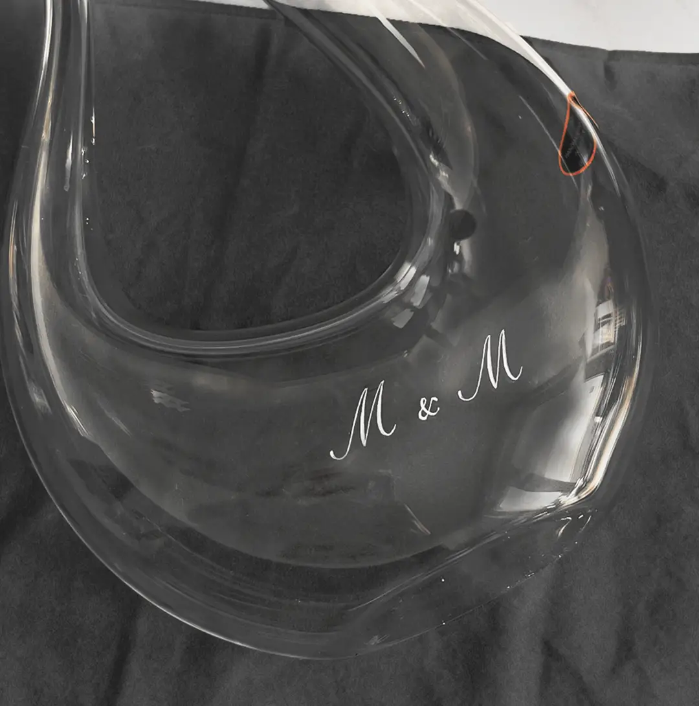

01 / Commande
La gravure sur verre permet de personnaliser une grande diversité de supports. Chaque réalisation est pensée sur mesure pour rendre chaque pièce unique et accompagner les moments précieux comme les attentions du quotidien.
Gravure en atelier
